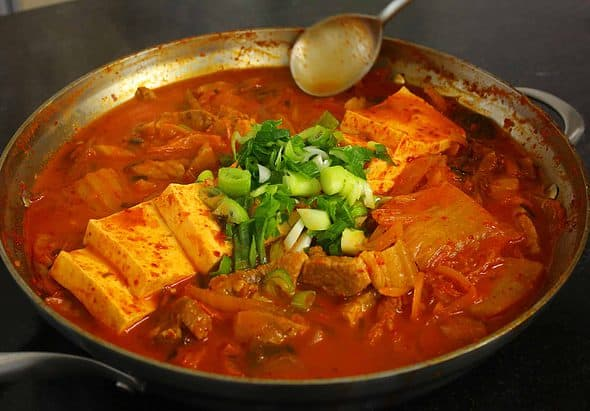

Kimchi jjigae

What is kimchi jjigae?
Kimchi jjigae is a traditional Korean kimchi stew that is spicy
and delicious. It is frequently eaten in Korea and can be made custom
by adding a variety of vegetables and meats, such as beef, tofu, scallions,
etc.
Ingredients
- 1 pound kimchi, cut into bite size pieces
- ¼ cup kimchi brine
- ½ pound pork shoulder (or pork belly)
- ½ package of tofu (optional), sliced into ½ inch thick bite size pieces
- 3 green onions
- 1 medium onion, sliced (1 cup)
- 1 teaspoon kosher salt
- 2 teaspoons sugar
- 2 teaspoons gochugaru (Korean hot pepper flakes)
- 1 tablespoon gochujang (hot pepper paste)
- 1 teaspoon toasted sesame oil
- 2 cups of anchovy stock (or chicken or beef broth)
How to make kimchi jjigae
- Place the kimchi and kimchi brine in a shallow pot. Add pork and onion
- Slice 2 green onions diagonally and add them to the pot.
- Add salt, sugar, hot pepper flakes, and hot pepper paste. Drizzle sesame oil over top and add the anchovy stock
- Cover and cook for 10 minutes over medium high heat
- Open and mix in the seasonings with a spoon. Lay the tofu over top.
- Cover and cook another 10 to 15 minutes over medium heat.
- Chop 1 green onion and put it on the top of the stew. Remove from the heat and serve right away with rice.